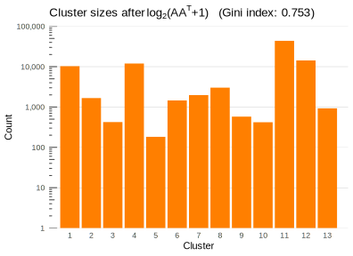

IMDB Genre Identification
Authors: Bi Wu & Chris Kardatzke
Links
This is a continuation of our previous works:
Background
We were previously interested in clustering IMDB movies by genre. We filtered out undesired content (i.e. television shows, web shorts, adult content, non-English titles) and applied vsp but found the method was highly sensitive to small densely-connected cliques of nodes (e.g. RiffTrax releases, Blondies movies; see blog for more details). This was evidenced by observing that the sizes of the resultant clusters were wildly imbalanced:
In this current project, we explore methods of mitigating the influence of these cliques. We hope this would lead to better identification of larger-scale genre info.
Analysis
Method 1 (Chris): Logistic Regression
In our first attempt at improving our clustering, we tried to contract our graph to exclude nodes which we predicted to belong to cliques. Our motivation for doing this was to get rid of some of the clusters that were too specific to be considered any sort of genre, for instance the director-specific clusters.
To predict which nodes belonged to cliques, we generated a number of node statistics on all of the title nodes. Included among these statistics were degree, a measure of the number of edges adjacent to a node, and coreness. The k-core of graph is a maximal subgraph in which each vertex has at least degree k. The coreness of a vertex is k if it belongs to the k-core but not to the (k+1)-core. We used these two measures to gauge a node’s connectedness. We also calculated the number of triangles at each node and degree distribution to other nodes. Within degree distribution we looked at the mean, mode, standard deviation, skew, and kurtosis of the distribution of degrees from a node to each other node. This metric was used to measure the connectedness of the nodes' neighbors.
Using a list of “IMDB top movies” and our previous attempt at clustering, we built a training dataset of around 1200 titles. We assigned a label of 1 to titles that had been assigned to clusters 2, 3, 5, and 7, four director-specific clusters, in our previous attempt at clustering. We assigned a label of 0 to titles in the “IMDB top movies” list. From there, we fit a logistic regression model to predict which of the remaining ~90,000 nodes belonged to cliques.
We then contracted all of these “cliquish” nodes and performed clustering using vsp once again. We found that with this subsetting, using 12 clusters worked better than 8. With this change in place, the Gini index of our cluster sizes fell to .865. Most importantly, our clusters looked much better. We no longer saw as many cliquish clusters like the cluster of Blondie movies we saw in our initial attempt.
Here are the top 12 best movies from each cluster selected using bff, followed by a description of each.
Group 1: His Last Race, This Hero Stuff, Free and Equal, Murder Will Out, The Last Hour, Peg o' My Heart, Come Again Smith, Danger, Go Slow, The Son of His Father, Flesh and Blood
Group 2: Salt Lake Raiders, Bandits of Dark Canyon, Marshal of Amarillo, Desperadoes of Dodge City, Marshal of Cedar Rock, Bandits of the West, Frontier Investigator, Oklahoma Badlands, The Bold Frontiersman, Sundown in Santa Fe
Group 3: Hit Favorites: Trick Or Treat Tales, Hit Favorites: Sweet Dreams, Hit Favorites: Preschool Fun, Bob the Builder: The Ultimate Can-Do Crew, A Change of Seasons, FM, Promises in the Dark, Try This One for Size, King B: A Life in the Movies, Wallace & Gromit: The Curse of the Were-Rabbit
Group 4: Cleopatra, ****, San Diego Surf, Since, The Nude Restaurant, Imitation of Christ, The Loves of Ondine, Hedy, The Velvet Underground Tarot Cards, Camp
Group 5: Sugar Shop, La La, The Anubis Tapes, The Bridge to Nowhere, Beyond, Killer Under the Bed, Friday I’m in Love, King of the Open Mics, JL Family Ranch 2, JL Ranch
Group 6: The 100 Best Black Movies (Ever), Sundance Skippy, Time Warp: The Greatest Cult Films of All-Time- Vol. 1 Midnight Madness, Luck, Trust & Ketchup: Robert Altman in Carver Country, Ghosts of Mississippi, Na Nai’a: Legend of the Dolphins, Before Her Time: Decommissioning Enterprise, Alan Pakula: Going for Truth, The Getaway, Platoon: Brothers in Arms
Group 7: Monique, My Love, Daughters of Lesbos, She Came on the Bus, Marcy, Sin in the City, Private Relations, Only in My Dreams, Unholy Matrimony, Crazy Wild and Crazy, The Good, the Bad and the Beautiful
Group 8: Blood Mercury, The King, The Swordsman, and the Sorceress, Angel of Reckoning, Hellcat’s Revenge, Arachnado, Challenge of Five Gauntlets, Meathook Massacre II, Hellcat’s Revenge II: Deadman’s Hand, Loose Luck, The Beast Beneath
Group 9: The Class Reunion, The Snow Bunnies, The French Love Secret, Runaway Hormones, Affair in the Air, The Sexpert, Lash of Lust, Deep Love, Lady Godiva Rides, I Love You, I Love You Not
Group 10: Ranchers and Rascals, The Trouble Buster, The Loser’s End, Not Built for Runnin', Win, Lose or Draw, Border Vengeance, Silent Sheldon, The Blind Trail, Without Orders, The Man from Oklahoma
Group 11: The New Frontier, The Woman Who Robbed the Stagecoach, Unearthed: The Curse of Nephthys, Loaded Monday, A Night of Hunt and Seek, Love Gods from Planet Zero, Counting Bullets, Wrecking Ball, You’re All Gonna Die, Kindness Matters
Group 12: The Beast Beneath, Arachnado, Ghosthouse, Angry Asian Murder Hornets, Tales from the Campfire 3, RoboWoman 2, Moon of the Blood Beast, Celluloid Slaughter, Axegrinder 2, Supernatural Assassins
- Early 1900s dramas
- 40s and 50s westerns
- Thomas the Tank Engine movies
- Warhol movies
- 2000s dramas
- Documentaries about films
- 60s and 70s sexual dramas
- 2000s action
- 70s smut
- 20s westerns
- 2020s westerns
- 2020s horror
Method 2 (Bi): Projection Transformation
The second method involves directly transforming the projected (movies by movies) adjacency matrix. Note this is possible since the original IMDB graph is bipartite.
After projection, the weight of each edge represents the number of cast in common. Below is a histogram of the (non-zero) values in the projected adjacency matrix.

Most pairs of movies share only a few actors in common, but a small percent are much more highly connected. These are believed to contribute to the poor genre clustering by vsp.
To decrease the influence of these cliquish nodes, we apply the transformation \(\log_2(AA^T+2)\). A log-type transform seems appropriate since it more harshly penalizes higher adjacency values. The \(+1\) term and base \(2\) are chosen to preserve \(0\)s and \(1\)s in the matrix. Afterwards, we run vsp again (this time choosing \(k=13\) as an appropriate cutoff based on the scree plot) and obtain these clusters:

This time, the Gini index is much lower (more than we would expect from the increased \(k\)), implying we obtained more balanced, larger-sized clusters, which should hopefully capture larger genre-level information.
Again, we use bff to select best features in each cluster for inspection:
Group 1: His Last Race, Murder Will Out, Free and Equal, This Hero Stuff, The Last Hour, The Marriage Ring, Flesh and Blood, The Thundering Herd, The Daredevil, Danger, Go Slow
Group 2: Peach Cobbler, Exposure, The Matadors, Stringer, 3 Bullets, Dark Cupid, Soul Pursuit, After Masks, Doctor Who Am I, Days of Power
Group 3: Laramie, Junction City, The Kid from Amarillo, Texas Dynamo, Trail of the Rustlers, Phantom Valley, The Stranger from Ponca City, West of Dodge City, Texas Stagecoach, Across the Badlands
Group 4: West Point of the Air, Bureau of Missing Persons, Sporting Blood, The Border Legion, The All-American, The Front Page, The Girl from Missouri, Test Pilot, Helldorado, Guilty as Hell
Group 5: ‘Neath Brooklyn Bridge, Let’s Get Tough!, Smart Alecks, Kid Dynamite, Mr. Hex, Bowery Buckaroos, Hard Boiled Mahoney, News Hounds, Mr. Muggs Steps Out, Block Busters
Group 6: Against All Odds, Mulatto, The Jealous Mirror on My Wall, Mirror on My Wall, The Unholy Disciple, Sodfather Spagatoni, Desert Dick, Right Before Your Eyes, Monster On, The Philly Mob
Group 7: Billy the Kid in Texas, Billy the Kid’s Fighting Pals, Billy the Kid’s Range War, Billy the Kid Outlawed, Billy the Kid in Santa Fe, Billy the Kid’s Gun Justice, Powdersmoke Range, The Land of Missing Men, Last of the Warrens, Thundering Gun Slingers
Group 8: The Summoned, Meltdown, Toad Warrior, Untitled Horror Comedy, Hawk Warrior of the Wheelzone, Max Hell the Frog Warrior A Zen Silent Flick, Body Count, High on the Hog, Soultaker, Point Dume
Group 9: The Lost Trail, Gun Smoke, The Navajo Trail, Trigger Fingers, Frontier Feud, West of the Rio Grande, Partners of the Trail, Under Arizona Skies, Flashing Guns, Sheriff of Medicine Bow
Group 10: I’m Not Me, Confiscated Police Video, Daddy…, Creepers ‘R Us, Deputy Small Town, Dog Sick, Crippled Heart, Casey’s Cleaning, Fear Me: Cold Blooded, Halloween Party
Group 11: When the Devil Rides Out, Joe’s War, Welcome to America, The Banksters, Madoff with America, Born2Race, Vail of Justice, Six Days in Paradise, Cross Wars, Peter Pan, Land of Forever, Wish Man
Group 12: Slumber Party Slaughter Party 2, PUTA: People for the Upstanding Treatment of Animals, Aconite, Greetings from Tromaville, Grizzled!, Terror Toons 4, The Ungovernable Force, The Beast Beneath, Joel D. Wynkoop’s Beast Mode, Nowhere Man
Group 13: Bells of Rosarita, Along the Navajo Trail, Lights of Old Santa Fe, Man from Oklahoma, Rainbow Over Texas, Home in Oklahoma, Don’t Fence Me In, Utah, Heldorado, My Pal Trigger
These clusters, similar to Chris’s results, seem to have clustered better by both genre and decade. Here are approximate descriptions of each cluster:
- 1920’s dramas
- late 2010’s to 2021 (unreleased) movies (mix of genres)
- 1940’s westerns
- 1930’s comedies/dramas
- 1940’s comedies
- late 2010’s to 2021 crime/mysteries
- Billy the Kid Westerns (1930’s to 1940’s)
- 1990’s to 2000’s horrors/thrillers
- More 1940’s westerns
- 2010’s horrors/thrillers
- 2010’s action dramas
- Niche 21st century horrors (like this and this)
- 1940’s musical
Further work
Using these methods, we were able to noticeably improve the clustering results of vsp. Considering our data only included information on the principal cast in each movie, we believe these clusters are fairly well categorized.
An additional idea we initially considered but did not pursue was a personalized page rank based method to identify highly connected actors to be contracted. Yuqin may pursue this in his project in his own offshoot of the project.